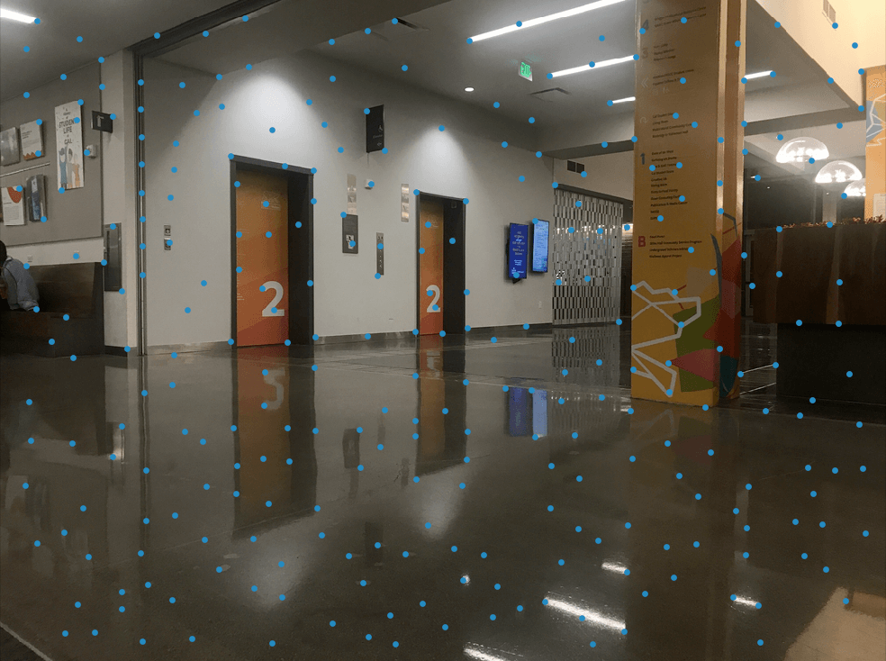

Part A
Part 1: Recover Homographies
To recover the homography matrix, I first used Python's ginput() function to pick certain points. Then, I computed p' = Hp and converted H from a 8x1 matrix to a 3x3 matrix. Typically, the correspondence points that are chosen are two-dimensional. In order to recover the Homography matrix, we transform these points into three-dimensional homography points, such that the third coordinate is a scaling factor.
Part 2: Rectification
A rectangular box is chosen by 4 points that are then passed onto the homography matrix with a unit square. Then, we perform inverse warping with the inverse homography matrix and the warped points (x', y').
Part 3: Image Stitching
A series of corresponding points are chosen between the left and center images for the homography matrix. Linear blending is finally performed and we are able to construct an image mosaic of the two! This can be done by rectifying the left image to a known shape, and padding both images based on the offsets of the warped corners of the left image.

|
||

|
||
Part B
Previously, in part A, I had to manually set my correspondence points, which ended up in many cases of trial & error due to the possibility of having "bad" points, ending in a bad blend between the left and center images. According to the paper “Multi-Image Matching using Multi-Scale Oriented Patches” by Brown et al., it is possible to perform autostitching and image mosaics without having to manually set correspondence points!Part 1: Harris Corners
First, we can get a series of interest points using a Harris point detector algorithm. This detects corner points based on a sliding window of points and measuring the intensity levels. Unfortunately, as shown below, there are too many interest points given.

|
|
Part 2: Adaptive Non-Maximal Suppression
Turns out, we can use the ANMS method to reduce the amount of interest points, especially since they are too close together. The main algorithm runs colinearly with the amount of interest points, so reducing such will speed up the algorithm.
For each harris point i, ANMS finds its suppression radius--the smallest distance between the harris point and another harris point j such that the corner strength of i is less than the product of a constant c and the corner strength of j. Next, we select the top 300 points based on the largest suppression radii. As we can see, the amount of points is reduced slightly, while also being evenly spaced out throughout the images. We can still significantly reduce these points, however!
|  | |
Part 3: Feature Descriptors and Matching
Next, we create feature descriptors for each harris point by first creating a 40x40 patch surrounding the point. Then, each patch gets downsampled to a 8x8 patch with bias/gain normalization.
These descriptors are made specifically for both the left and center images. It now makes sense to keep only descriptors that match with each other--based on Lowe's algorithm. Essentially, we compute the SSD between an arbitrary left and center descriptor, corresponding to the left and center points. Then we take the bottom two lowest SSDs and determine if they satisfy the condition 1-NN/2-NN < k for k is an arbitrary number, like 0.5. This significantly reduces the amount of interest points we have!
Part 4: RANSAC
Although feature matching significantly reduces our interest points, there exists some outliers in the matching pairs. This can significantly alter our Homography matrix, so we use the RANSAC algorithm to create an appropriate Homography matrix that would blend the two images together with a slightly less amount of matching pairs. The following algorithm goes by the following:
- Select 4 matching pairs at random.
- Compute the homography matrix and the inliers; matching pairs (p, p') are inliers if SSD(p', Hp) < k.
- Keep the largest set of inliers after repeating steps 1 and 2 n times, for n is an arbitrary large integer.
- Recompute the homography matrix with the largest set of inliers.
Results
After obtaining the homography matrix from the RANSAC algorithm, we run the same warping procedure as from part A. The left images are autostitched, and the right images are the results of picking manual points. We can see that the blending is significantly more seamless in the left images!
Summary
What I thought was really interesting was how the Homography matrix was the key to image rectification and mosaic building. It's fascinating how such transformation matrices can easily transform the POV of an image, and how they can help stitch two images into a panorama. Furthermore, it was really cool to learn about how autostitching worked in images! It didn't occur to me that various equations dictated what were exactly "good" correspondence points when it came to computing an ideal homography matrix.